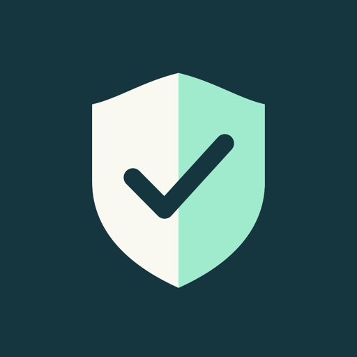

セキュアラボ
エンジニアにも、そうでない人にも。
立場に合わせて、仕事のセキュリティを学ぶiPhone・iPadのアプリです。
できること
立場を選んで始める
エンジニア／広報・お客さま窓口／経営・管理職／事務・現場の社員から選ぶと、おすすめの順番があなたに合わせて変わります。学習の途中でも変えられます。
職場のセキュリティ
だましのメールとSMS、パスワード、共有の設定、個人情報、SNS、生成AIの使い方、委託先、なりすましの請求、事故のときの報告と備え、広報・窓口・経営・管理職・経理の持ち場ごとの守り。4コース・20レッスン。
エンジニア向けの12コース
認証と認可、暗号、OAuth、Webの脆弱性、モバイル、生成AI、インフラ、運用まで。図と「比べて見る」表で、取り違えやすいところを整理します。
実験室とパズル
パスワードの保存、パスキー、アクセス制御、SQLなどを、架空のデータで試せます。手順を組み立てるパズルで、理解を確かめます。
聞いて学ぶ
要点とクイズ、レッスン本文、用語、間違えた問題を、ずんだもんの声で。画面を消しても続けて聞けます。
資格試験の対策
情報セキュリティマネジメント試験・基本情報技術者試験・情報処理安全確保支援士試験の出題範囲に、レッスンを対応付けました。オリジナルの練習問題つき。
インシデント訓練
実際に起きた国内外の事故を参考にした23の架空の事故を、情報システム・広報・経営など48の役割から選んで、時刻つきの場面で判断する机上訓練。電話やメール、SNSの投稿が届く形のまま読み、第一報やおわびの文面も組み立てます。
復習と修了証
間違えた問題は、間隔をあけて復習に出ます。コースを終えると、共有できる修了証を受け取れます。
無料で試せる
立場ごとに、無料で試せる範囲があります（エンジニアは「はじめの一歩」の10レッスン、ほかの立場は「毎日の守り」の5レッスンなど）。一度フル版（買い切り・月額なし）を買えば、立場によらず、すべて使えます。
大切にしていること
アカウントの登録はありません。学習の記録は端末の中にだけ保存し、広告や解析のSDKは使いません。演習は架空のデータによる模擬体験で、実在のシステムを攻撃する方法は扱いません。
声：VOICEVOX:ずんだもん